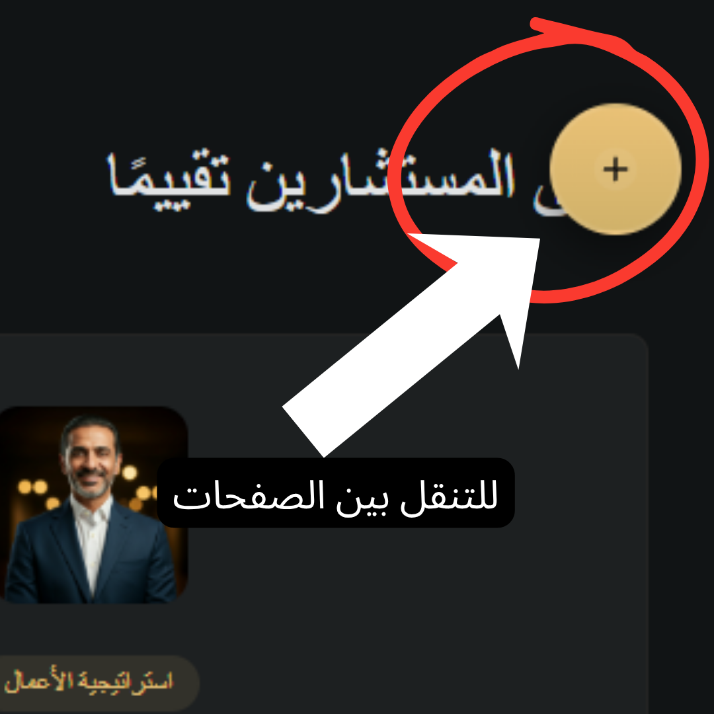

هذا نموذج لتطوير صفحة 'اختر مستشارك' اتمنى ينال اعجابكم
ملاحظة: هذا نموذج و اللغة البرمجية المكتوبه مبسطه فقط لمشاركة النتيجة النهائية للصفحة مع نموذج لصفحة لوحة التحكم و صفحة بروفايل الاستشاري

ملاحظة: هذا نموذج و اللغة البرمجية المكتوبه مبسطه فقط لمشاركة النتيجة النهائية للصفحة مع نموذج لصفحة لوحة التحكم و صفحة بروفايل الاستشاري